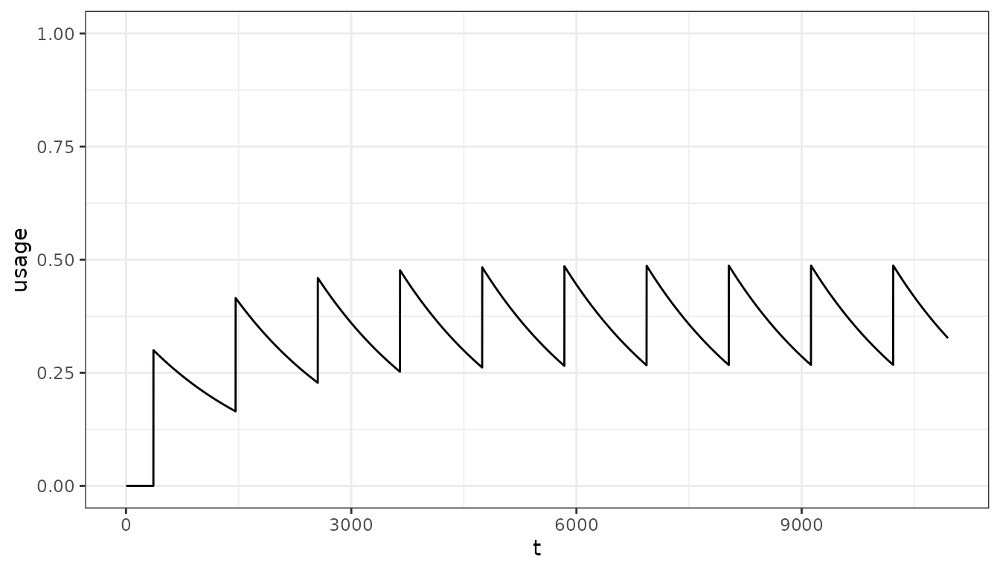
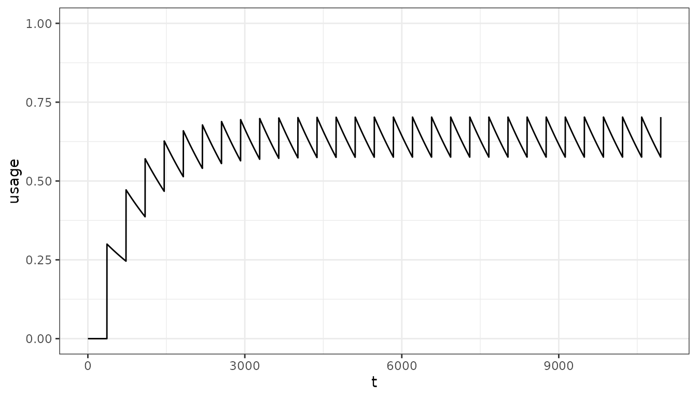
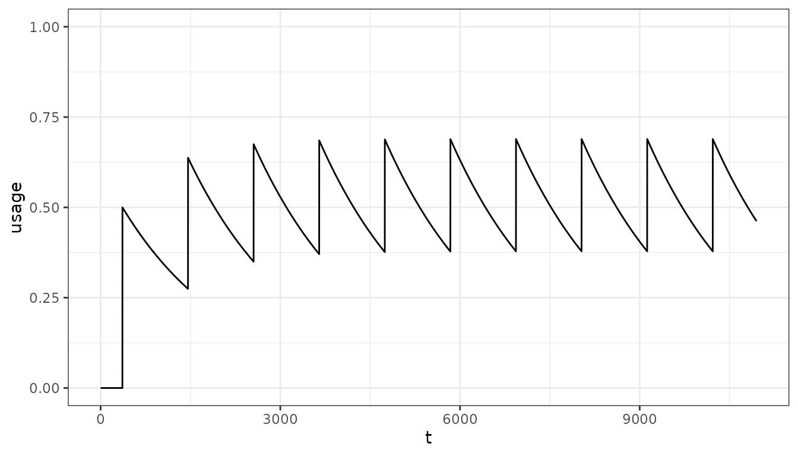
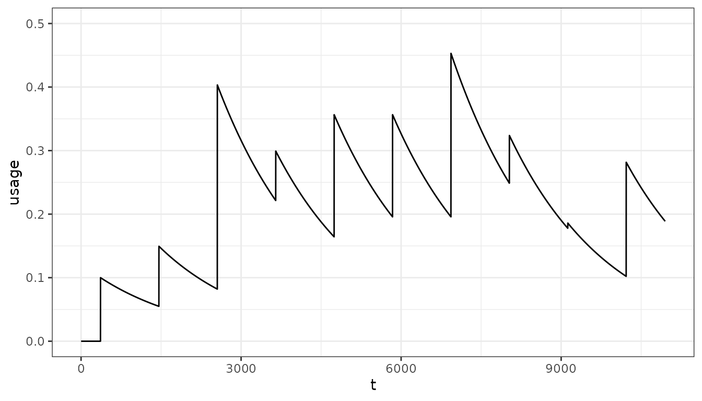
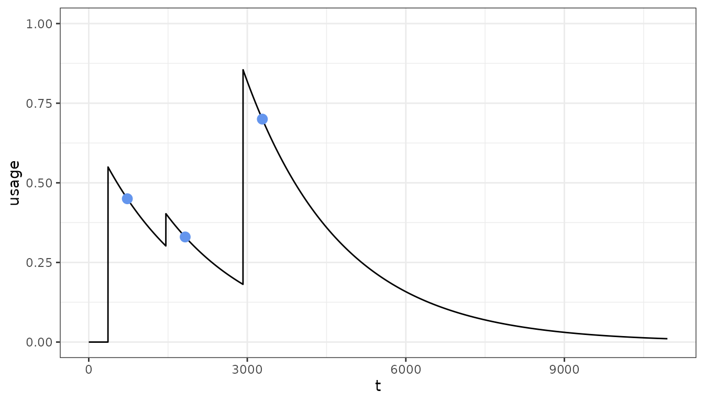

Estimating population usage from input distribution
population_usage.RmdIn malariasimulation we can implement the bed net intervention by specifying the % of the population who are distributed a bed net (and assumed to use it) at given time points.
Often it is helpful to understand the resulting population levels of bed net usage from a set of bed net distributions over time. The % of individuals protected by a net at any time point is a function of the cumulative distributions that have occurred, the duration of net retention and the correlation of recipients between rounds.
In netz, we can simulate population usage and examine how varying distribution size and frequency, and net retention impacts our estimates. For these estimates, we assume that net distributions are randomly correlated and net rentention is exponentially distributed.
Let’s start with a simple distribution model:
- Distribution cycle: A mass distribution once every 3 years
- Distribution size: 70% of the population covered
- Net retention: Assume net retention decays exponentially with a half life of 5 years
year <- 365
timesteps <- 30 * year
population <- 5000
distribution <- rep(0.3, 10)
distribution_timesteps <- year * seq(1, 30, 3)
net_hl <- 5 * year
pu <- population_usage(
timesteps = timesteps,
distribution = distribution,
distribution_timesteps = distribution_timesteps,
half_life = net_hl)
pd <- data.frame(t = 1:timesteps, usage = pu)
ggplot(pd, aes(x = t, y = usage)) +
geom_line() +
ylim(0, 1) +
theme_bw()
We can see that population usage initially rises with the first distribution and keeps on rising with additional distributions as some of those who did not receive a net previously get one. Eventually the system reaches an an equilibrium.
More frequent distribution will lead to net usage to build to higher levels:
distribution2 <- rep(0.3, 30)
distribution_timesteps2 <- year * seq(1, 30, 1)
pu <- population_usage(
timesteps = timesteps,
distribution = distribution2,
distribution_timesteps = distribution_timesteps2,
half_life = net_hl)
pd <- data.frame(t = 1:timesteps, usage = pu)
ggplot(pd, aes(x = t, y = usage)) +
geom_line() +
ylim(0, 1) +
theme_bw()
As will larger distributions:
distribution3 <- rep(0.5, 10)
pu <- population_usage(
timesteps = timesteps,
distribution = distribution3,
distribution_timesteps = distribution_timesteps,
half_life = net_hl)
pd <- data.frame(t = 1:timesteps, usage = pu)
ggplot(pd, aes(x = t, y = usage)) +
geom_line() +
ylim(0, 1) +
theme_bw()
We do not currently account for correlation in the net usage functions. However, in the simple case of regular distributions, exponential net loss, and correlation we have the analytical solution for the average population level usage.
analytical <- exp_loss_equilibrium(distribution = 0.3, distribution_frequency = 3, net_loss_hl = 5)
analytical
#> [1] 0.2255942We may also need to estimate population usage when distributions are not regular:
distribution4 <- c(0.1, 0.1, 0.35, 0.1, 0.23, 0.2, 0.32, 0.1, 0.01, 0.2)
distribution_timesteps4 <- seq(1, 30, 3) * year
pu <- population_usage(
timesteps = timesteps,
distribution = distribution4,
distribution_timesteps = distribution_timesteps4,
half_life = net_hl)
pd <- data.frame(t = 1:timesteps, usage = pu)
ggplot(pd, aes(x = t, y = usage)) +
geom_line() +
ylim(0, 0.5) +
theme_bw()
Fitting to target usage
In many cases we might have a set of observed population level usage estimates that we want to match to. We can use a non-linear optimiser to fit the distribution to these target usages:
# Target usage associated time points
target <- c(0.45, 0.33, 0.7)
target_tt <- c(2, 5, 9) * 365
# Time points at which distribution will occur
distribution_tt <- c(1, 4, 8) * 365
# Fit
fit <- fit_usage(target_usage = target, target_usage_timesteps = target_tt,
distribution_timesteps = distribution_tt)
pu <- population_usage(
timesteps = timesteps,
distribution = fit$par,
distribution_timesteps = distribution_tt,
half_life = net_hl)
pd <- data.frame(t = 1:timesteps, usage = pu)
pd2 <- data.frame(target = target, target_tt = target_tt)
ggplot() +
geom_line(data = pd, aes(x = t, y = usage)) +
geom_point(dat = pd2, aes(x = target_tt, y = target), col = "cornflowerblue", size = 3) +
ylim(0, 1) +
theme_bw()
Let’s try a more complex fit, where we set the upper limits of the annual distribution to capture a 3-year cycle with a mass distribution on year one followed by top-up distributions on the second and third year:
timesteps <- 12 * 365
# Target usage associated time points
target <- seq(0.1, 0.8, length.out = 10) * c(1, 0.8, 0.5, 1, 0.8, 0.5, 1, 0.8, 0.5, 1)
target_tt <- (1:10) * 365
# Time points at which distribution will occur
distribution_tt <- ((0:9) * 365) + 1
distribution_upper <- c(1, 0.3, 0.3, 1, 0.3, 0.3, 1, 0.3, 0.3, 1)
# Fit
fit <- fit_usage(target_usage = target, target_usage_timesteps = target_tt,
distribution_timesteps = distribution_tt,
distribution_upper = distribution_upper,
timesteps = timesteps)
pu <- population_usage(
timesteps = timesteps,
distribution = fit$par,
distribution_timesteps = distribution_tt,
half_life = net_hl)
pd <- data.frame(t = 1:timesteps, usage = pu)
pd2 <- data.frame(target = target, target_tt = target_tt)
ggplot() +
geom_line(data = pd, aes(x = t, y = usage)) +
geom_point(dat = pd2, aes(x = target_tt, y = target), col = "cornflowerblue", size = 3) +
ylim(0, 1) +
theme_bw()